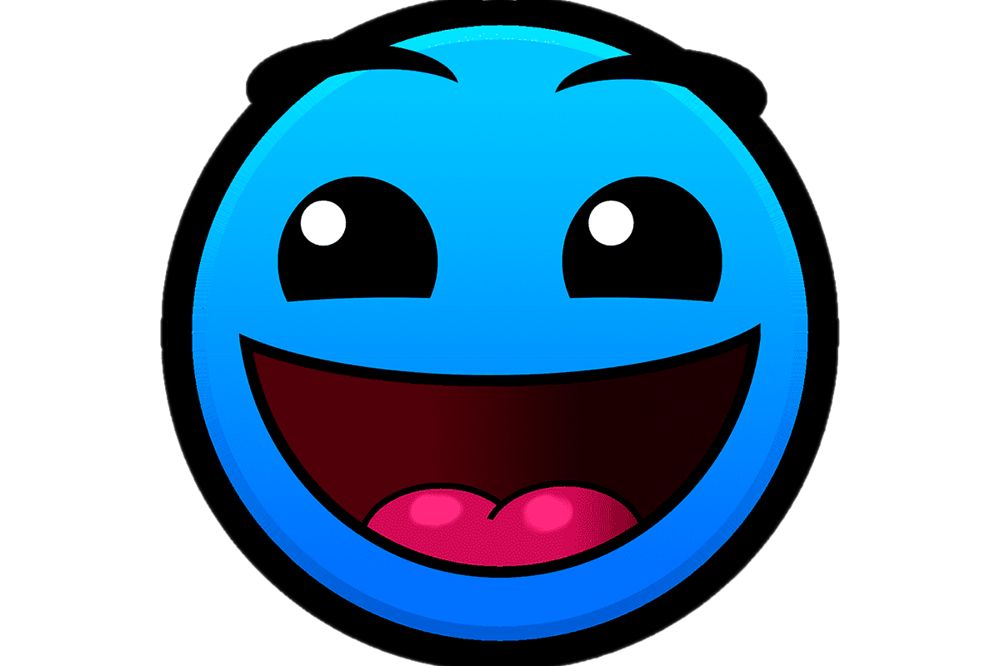

¡Comandos del canal!
- !sabias - ¡Arroja un dato al azar interesante!
- !sabias - ¡Arroja un dato al azar interesante!
- !wsp - Envia un enlace para unirse al grupo de wsp.
- !redes - ¡Envia un mensaje que contiene todas las redes sociales de Tincho!
- !regalo - ¡Hazle un regalo misterioso a otro usuario!
Estos comandos pueden ser utilizados por cualquier usuario en el canal y solo dependen de su cooldown.
¡Comandos para subscriptores!

- !sabias - ¡Arroja un dato al azar interesante!
- !wsp - Envia un enlace para unirse al grupo de wsp.
- !redes - ¡Envia un mensaje que contiene todas las redes sociales de Tincho!
- !regalo - ¡Hazle un regalo misterioso a otro usuario!
Los comandos de esta lista son exclusivos y solo pueden ser utilizados en un directo por aquellos usuarios que tengan una sub activa en el canal y algunos tienen uso limitado por directo.